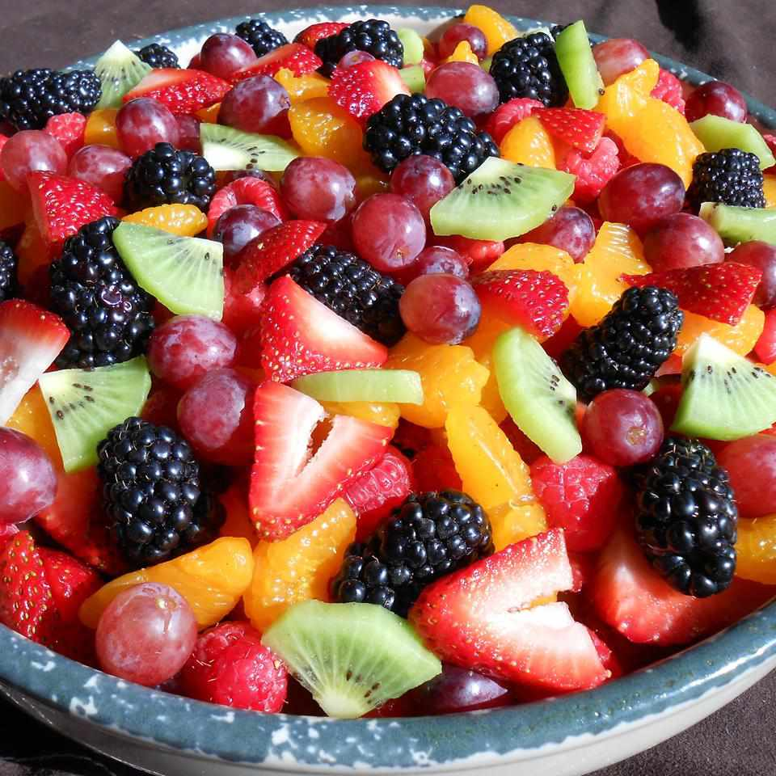

Fruit Salad

This fruit salad is perfect for a backyard bbq or any occasion.
There are never leftovers! This is one of my favorite fruit salad recipes,
as I think the citrusy sauce really makes it.
This salad is tastier the longer you can let it soak in its juices.
I prefer 3 to 4 hours in the refrigerator before I serve it.
- Orange Juice
- Lemon Juice
- Brown Sugar
- Grated Orange
- Lemon Zest
- Vanilla Extract
- Pineapple
- Strawberries
- Kiwis
- Bananas
- Oranges
- Grapes
- Blueberries
- Make the sauce on the stove and let it cool.
- Arrange the fruits in a container, then pour the sauce over them.
- Cover and refrigerate to allow the flavors to meld.